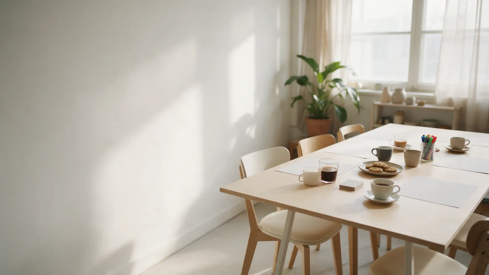
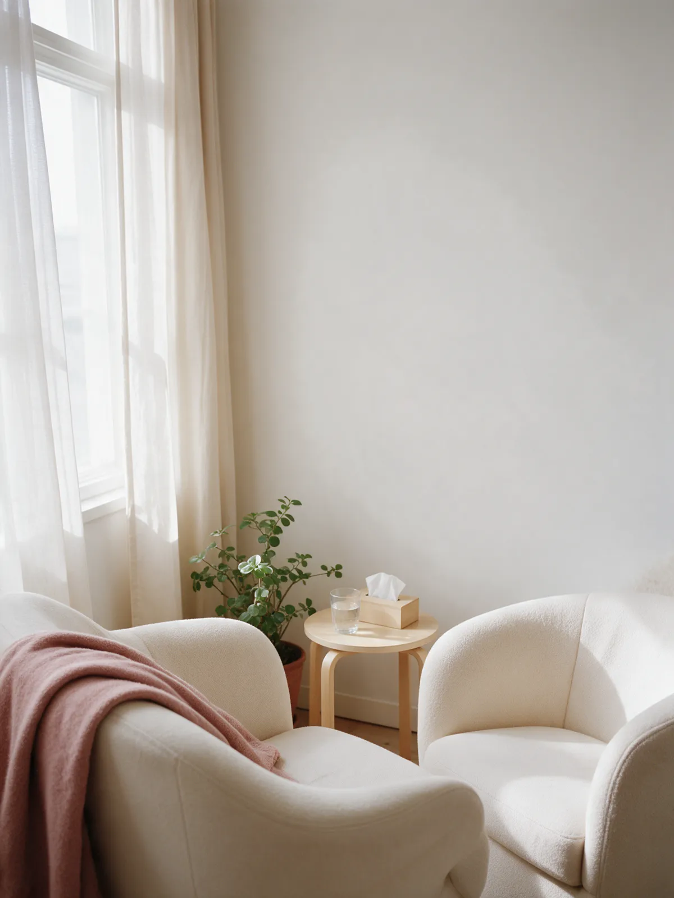
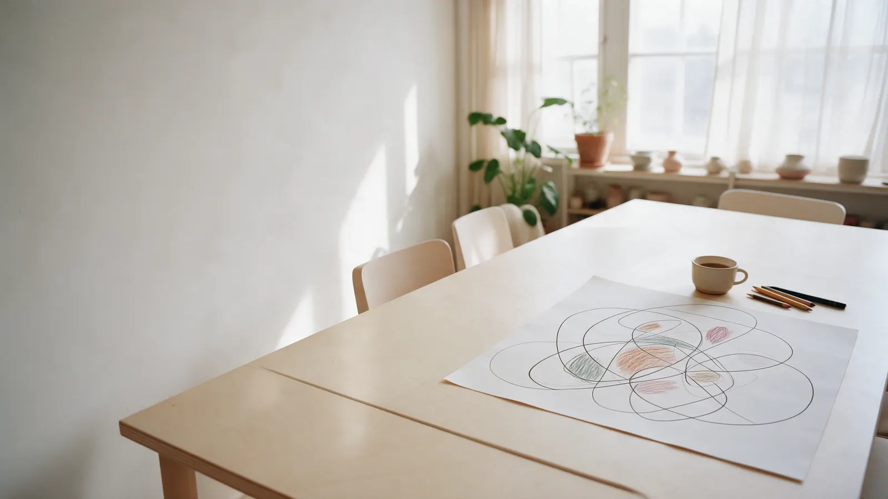
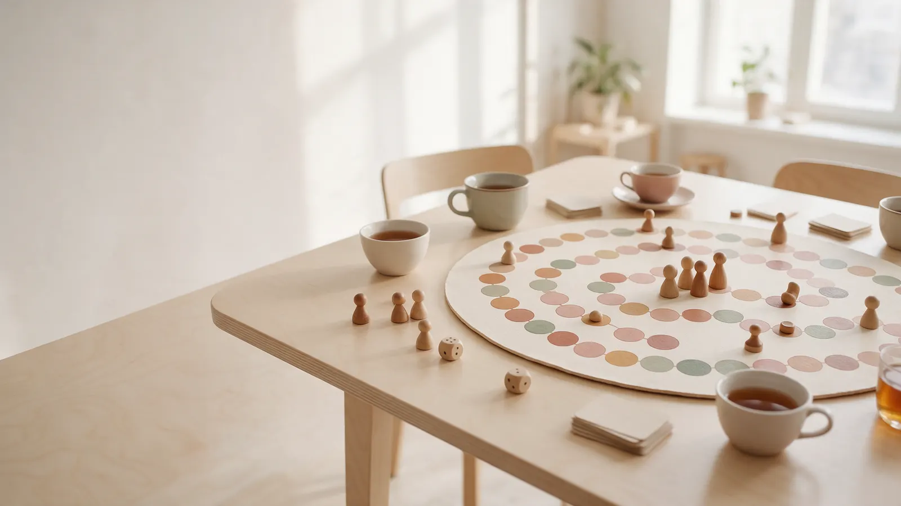
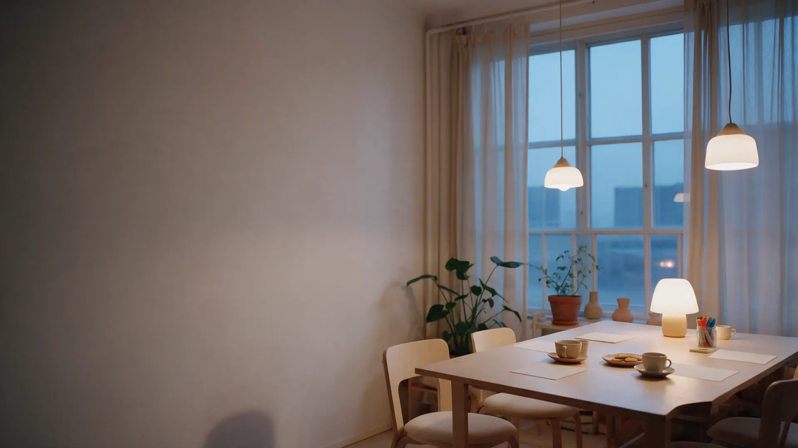

«Хожу на индивидуальные консультации к Елене Лавровой, очень нравится. Специалист прекрасный, мне очень помогает со многим разобраться.»Нина Абудихина, отзыв на Яндекс Картах

Ежедневно
10:00–21:00
Щапова, 20, офис 332
Психологическая студия «Твой ресурс»
Психологическая студия в Ярославле: от консультации до женских групп
Елена Лаврова – психолог для взрослых. Консультации очно и онлайн, мини-группы, нейрографика и трансформационные игры.
- Цены на все форматы – на сайте
- Очно на Щапова или онлайн
- Мастер-класс – от 1500 ₽
- Ежедневно с 10:00 до 21:00
Пять вопросов, которые задают до первой встречи
Отвечаем на них здесь, чтобы написать было проще.
- 1С чего начать?
- 2Как проходит консультация?
- 3Сколько это стоит?
- 4Кто ведёт?
- 5Когда можно прийти?
Форматы
Индивидуально, в группе, за игрой и с карандашом
Цены – с карточки на Яндекс Картах. Расписание групп и актуальную стоимость уточняйте в Телеграме.
Индивидуальная консультация
1,5 часа, очно или онлайн. Отношения и одиночество, неудовлетворённость жизнью, трудные ситуации, тяжёлое эмоциональное состояние.
5000 ₽Мини-группа для женщин
5 часов, МАК-техники. Темы: отношения, благополучие, познание себя, цели, деньги, лишний вес.
3500 ₽Трансформационная игра
5 часов, настольная игра с проработкой личных запросов: «Женское счастье», «Формула успеха», «Трансформация тревоги», «Хочу замуж», «7 шагов к стройности».
3000 ₽Мастер-класс по нейрографике
4 часа: «СТОП конфликт», «Верное решение», «PROденьги», «Мои отношения», «Любовь к себе» и другие темы.
1500 ₽
Не знаете, какой формат выбрать? Напишите в Телеграм пару слов о том, что беспокоит, – подскажем, с чего начать.
Записаться
Вопрос 1 · С чего начать?
Не обязательно сразу идти на консультацию
Три сомнения, из-за которых к психологу не доходят, – и что пишут те, кто пришёл.
- Сомнение 1
«Сразу к психологу – страшно»
Начните с мастер-класса или дня открытых дверей. Aleksandra P.: «Была на дне открытых дверей, приятная атмосфера, открыла для себя новые методики борьбы со стрессом и выгоранием».
- Сомнение 2
«Не знаю, с чем идти»
С отношениями и одиночеством, с ощущением «всё не так, как хочется», с трудной ситуацией или тяжёлым состоянием – с этим и приходят на консультацию.
- Сомнение 3
«У психолога тяжело и скучно»
О групповых встречах пишут: «Оооочень ресурстно, познавательно, «глубоко», мудро и при этом в легкости и по женски».
Поэтому
Начать можно с мастер-класса по нейрографике за 1500 ₽ – а потом решить, нужна ли личная работа.
«Планирую пойти в личную терапию к Елене» – из того же отзыва о групповых встречах.
Вопрос 2 · Как проходит консультация?
Полтора часа, чтобы разобраться
Пять шагов от сообщения до решения, как работать дальше.
Шаг 1Написать
В Телеграм или по телефону: пара слов о запросе и удобное время. Студия открыта ежедневно с 10:00 до 21:00.
Шаг 2Выбрать формат
Очно – улица Щапова, 20, третий этаж, офис 332. Или онлайн, по той же цене.
Шаг 3Консультация
1,5 часа с Еленой Лавровой. Подходы – гештальт, когнитивный, транзактный анализ.
Шаг 4Решить, как дальше
Регулярные встречи, мини-группа или мастер-класс – решаете вы.
Шаг 5Оплатить
Можно картой.
Записаться
Напишите пару слов о том, что беспокоит, – подберём время.

Вопрос 3 · Сколько это стоит?
Четыре формата – четыре цены
Цены с карточки на Яндекс Картах. Можно оплатить картой.
Консультация 5000 ₽
1,5 часа, очно или онлайн, с Еленой Лавровой.
На карте: консультацияМини-группа 3500 ₽
5 часов для женщин, МАК-техники: отношения, цели, деньги, познание себя.
На карте: мини-группаТрансформационная игра 3000 ₽
5 часов: настольная игра, где каждый прорабатывает свой запрос по теме игры.
На карте: играНейрографика 1500 ₽
Мастер-класс на 4 часа – самый мягкий способ познакомиться со студией.
На карте: нейрографикаОдна студияКонсультация · 5000 ₽Четыре формата
Вопрос 4 · Кто ведёт?
Елена Лаврова, психолог для взрослых
Гештальт, когнитивный подход, транзактный анализ. Индивидуальные консультации, мини-группы, игры, мастер-классы и дни открытых дверей.

Где проходят встречи
- Улица Щапова, 20, третий этаж, офис 332«…удобное месторасположение и парковку, в шаговой доступности от остановки общественного транспорта» – Зоя Жарикова
- Ежедневно с 10:00 до 21:00По предварительной записи
- Очно или онлайнИндивидуальная консультация – в обоих форматах
- Кофе и чай«В студии очень уютно и всегда есть вкусный кофе» – Зоя Жарикова
Отзывы
Что пишут на Яндекс Картах
-
«Хожу на индивидуальные консультации к Елене Лавровой, очень нравится. Специалист прекрасный, мне очень помогает со многим разобраться.»
-
«Чудесный психолог Елена Лаврова, доброжелательная атмосфера и ... серьезная работа, с каждой сессией становится легче. Благодарю!»
-
«Была на дне открытых дверей, приятная атмосфера, открыла для себя новые методики борьбы со стрессом и выгоранием. Приду еще на индивидуальную консультацию! Елена профессионал и быстро располагает к себе, для меня это важно!»
Отзывы скопированы с карточки на Яндекс Картах без правок.

Вопрос 5 · Когда можно прийти?
Запишитесь на удобное время
Напишите в Телеграм пару слов о запросе – подберём время консультации или ближайшую группу. Студия открыта каждый день с 10:00 до 21:00.